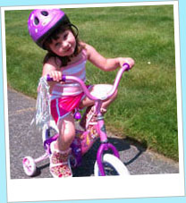

Not a member? Click here to sign up!
NannyNotes
How does NannyNotes work?
Do you ever wish there was a fast and simple way to check in on your kids? Then NannyNotes is for you! After customizing your preferences, your Nanny can journal your child's activities through out the day from their computer or mobile device. Each journal is a passcode protected site. All content is private and can't be accessed by a search engine. Sign up is simple!
- Initial Sign-up is Free for the first 30 days!
- Customize your child's journal to your needs. Monthly fees are based on selected features.
- We'll send an email to you and your nanny about accessing the site.
- You're ready to start using NannyNotes!
NannyNotes is great! I can check in on my two boys without interrupting their day. I really love the new photo albums! It makes it easy to save and print my favorites. -Jill Gig Harbor, WA
=======
How does NannyNotes work?
Do you ever wish there was a fast and simple way to check in on your kids? Then Nanny Notes is for you! After customizing your preferences, your Nanny can journal your child's activities through the day from their computer or mobile device.
Sign up is simple!
- Initial Sign-up is Free for the first 30 days!
- Customize your child's journal to your Needs. Monthly fees are based on selected features.
- Send an email to your nanny for instructions on how they can access your child's journal.
- You're ready to start using NannyNotes!
Also Now Available for Mobile Devices!
Start your Free Trial Today!
Here are a few comments from our Nanny Notes members:
NannyNotes is great! I can check in on my two boys without interrupting their day. I really love the new photo albums! It makes it easy to save and print my favorites. -Jill Gig Harbor, WA
>>>>>>> f6d3cd5ed8346b544b9ef13a909a0fd2474cfc0bAs a Nanny, I love how easy it is to make comments or upload pictures. I can make a note about how long the children slept or pass on a funny story without disturbing their parents at work. -Carol Ann Meridian, MS
It is hard trusting someone to take care of your children. NannyNotes has given me peace of mind. I know my children are in good hands and are having fun. -Paul Ithica, NY
<<<<<<< HEAD

- 